Network Traffic Fundamentals using Wireshark (60 Minutes)¶
Lab Type: Network Traffic Fundamentals
Tool: Wireshark
Duration: 3 Hours
System: Kali Linux (Ubuntu/Debian compatible)
Lab Overview¶
You have recently joined the Security Operations Center (SOC) team of a startup organization. Before you can identify suspicious activity or investigate cyber incidents, you must first understand what legitimate network traffic looks like.
In this lab, you will capture and analyze various types of network traffic using Wireshark and learn how common protocols operate in real-world environments.
Learning Objectives¶
By the end of this lab you will be able to:
- Understand packet flow in a network
- Capture and analyze network traffic using Wireshark
- Identify common protocols including ARP, DNS, ICMP, TCP, HTTP, and HTTPS
- Distinguish between encrypted and unencrypted traffic
- Explain the role of firewalls and VPNs in network security
Scenario¶
You have recently joined the Security Operations Center (SOC) team of a startup organization. Before you can identify suspicious activity or investigate cyber incidents, you must first understand what legitimate network traffic looks like.
In this lab, you will capture and analyze various types of network traffic using Wireshark and learn how common protocols operate in real-world environments.
Capturing Your First Packets¶
Objective¶
Learn how to capture network traffic and identify ICMP packets generated by the Ping utility.
Launching Wireshark¶
-
Open Wireshark. For the sake of this lab, we will be using Kali Linux, which already has Wireshark installed. However, one can install Wireshark on Windows machine or even MacOS.
-
Select the active network interface (Wi-Fi or Ethernet).
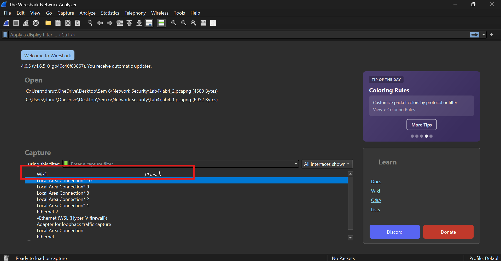
- Click the Start Capture button. Usually, as soon as you start a new project on wireshark and select interface, capture starts automatically. If not, click the Start Capture button.
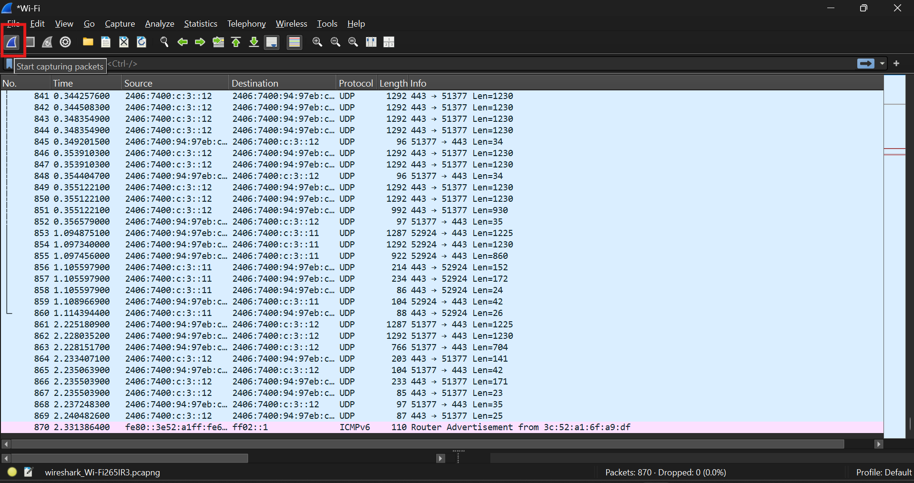
Warning
Run Wireshark on Windows as administrator, or launch from terminal in Kali Linux using sudo privileges.
Generate Network Traffic¶
Open a terminal or command prompt and execute:
Windows
ping google.com
Linux
ping -c 4 google.com
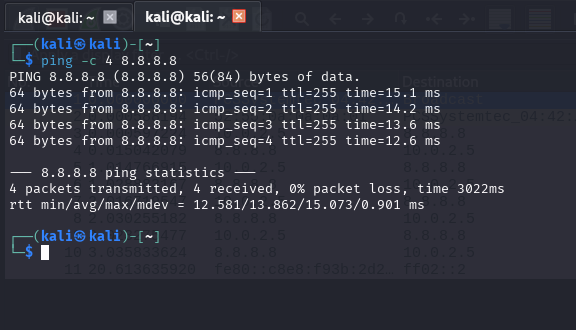
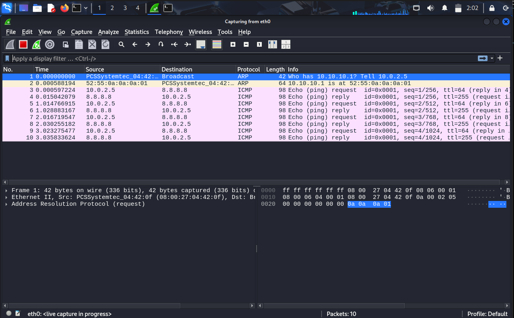
Observe the Traffic¶
Return to Wireshark and locate the generated ICMP packets. You may use the following display filter:
icmp
Understanding the Results¶
When the ping command is executed:
- Your system sends an ICMP Echo Request packet.
- The destination system receives the request.
- The destination replies with an ICMP Echo Reply packet.
This process verifies connectivity between two hosts.
Discussion Questions¶
How many ICMP packets were generated?
The number of ICMP packets depends on how many ping requests were sent. Each ping generates one ICMP Echo Request and one ICMP Echo Reply. For example, if 4 ping requests are sent and all receive responses, a total of 8 ICMP packets will be captured.
What is the difference between an Echo Request and an Echo Reply?
An ICMP Echo Request is sent by a device to check whether another device is reachable on the network. An ICMP Echo Reply is the response sent back by the destination device to confirm that it received the request and is reachable.
What would happen if the destination system blocked ICMP replies?
If the destination system blocks ICMP replies, the source device will not receive any response to its ping requests. As a result, the ping command will show a timeout even though the destination system may still be online.
Can a host still be online if it does not respond to ping requests?
Yes. Many systems and firewalls are configured to block ICMP traffic for security reasons. A host can still be online and providing services such as web hosting or remote access even if it does not respond to ping requests.
Address Resolution Protocol (ARP) Analysis¶
Objective¶
Understand how devices discover MAC addresses within a local network and examine why ARP is frequently abused by attackers. Many internal network attacks begin with ARP manipulation. Understanding legitimate ARP traffic helps analysts identify suspicious behavior such as Man-in-the-Middle (MITM) attacks, rogue devices, and ARP poisoning attempts.
Clear Existing ARP Cache¶
Before beginning the capture, clear the ARP cache to force the system to generate fresh ARP requests.
On a Windows machine, use:
arp -d *
On Kali Linux VM, use:
sudo ip neigh flush all
Generate ARP Traffic¶
-
Open Wireshark and click Start Capture
-
Ping your default gateway
ping 192.168.1.1Replace the IP Address with your gateway address if different -
Apply the following display filter:
arpYou should immediately observe ARP packets appearing in the capture.
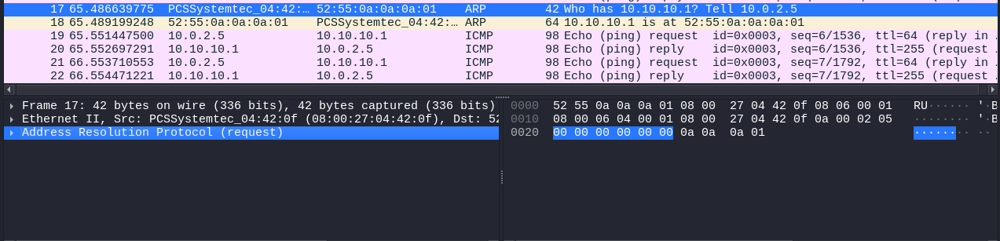
Analyze the ARP Exchange¶
Locate a packet containing a message similar to:
Who has 192.168.1.1?
Tell 192.168.1.100
This is an ARP Request. The device is essentially asking, "Which device owns IP address 192.168.1.1? Please send me your MAC address." Shortly afterwards, locate the corresponding ARP Reply 192.168.1.1 is at 00:11:22:33:44:55. This response provides the MAC address associated with the requested IP address.
Attacker Scenario¶
An attacker connected to the same network can send forged ARP replies claiming:
192.168.1.1 is at AA:AA:AA:AA:AA:AA
Victim devices update their ARP tables and begin sending traffic to the attacker's machine instead of the legitimate gateway. This attack can be used for:
- Credential interception
- Session hijacking
- Network surveillance
- Man-in-the-Middle attacks
Discussion Questions¶
Why does ARP use broadcast traffic?
ARP uses broadcast traffic because the sender knows the destination IP address but does not know its MAC address. The ARP request is sent to all devices on the local network, and the device with the matching IP address responds with its MAC address.
Why is ARP considered insecure by design?
ARP is considered insecure because it does not verify the authenticity of ARP messages. Any device on the local network can send forged ARP replies, which attackers can use to redirect or intercept network traffic.
How could a SOC analyst identify ARP poisoning attempts?
A SOC analyst can identify ARP poisoning attempts by looking for unusual ARP activity, such as multiple IP addresses associated with the same MAC address, unexpected changes in ARP tables, or a sudden increase in ARP traffic on the network.
What defensive technologies help mitigate ARP spoofing?
Technologies such as Dynamic ARP Inspection (DAI), DHCP Snooping, static ARP entries, and network intrusion detection systems can help prevent or detect ARP spoofing attacks by validating ARP communications and monitoring network activity.
DNS Traffic Investigation¶
Objective¶
Understand how the Domain Name System (DNS) translates human-readable domain names into IP addresses and learn how to identify DNS queries and responses using Wireshark.
DNS is one of the most frequently used protocols on modern networks. Every time a user visits a website, sends an email, or accesses a cloud application, DNS is typically involved in resolving domain names to IP addresses. As a SOC analyst, understanding DNS traffic is essential because many attacks, including phishing, malware communication, and data exfiltration, often abuse DNS.
Generate DNS Traffic¶
- Ensure Wireshark is actively capturing traffic.
- Open a web browser and visit:
www.google.com - Allow the page to load completely.
Analyze DNS Exchange¶
- Apply the following display filter:
dns
You should now see DNS queries and responses generated by your system.
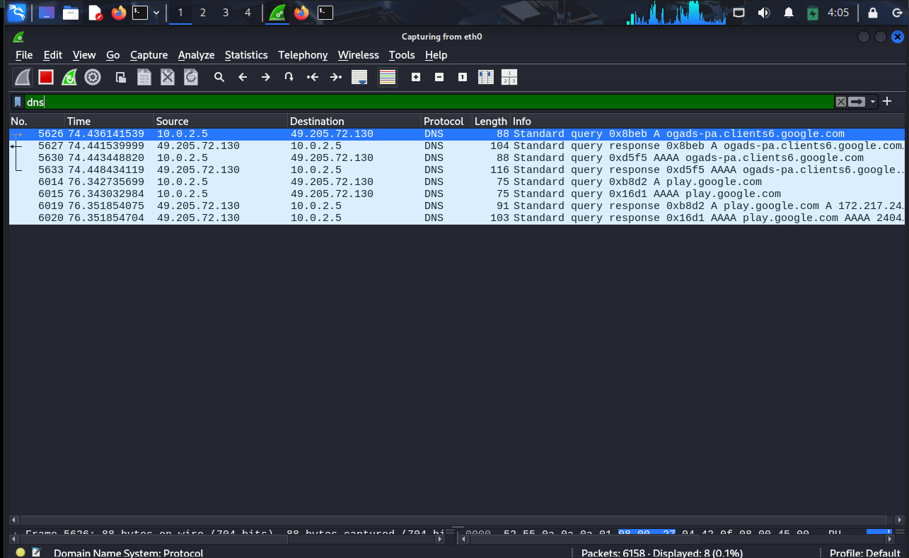
-
Locate a DNS query packet and examine the following fields:
-
Source IP Address
- Destination IP Address
- Query Name
- Query Type
You should observe a query similar to:
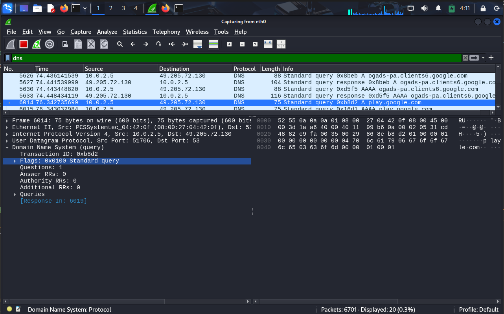
This packet represents your system asking a DNS server for the IP address associated with the Facebook domain.
- Next, locate the corresponding DNS response packet.
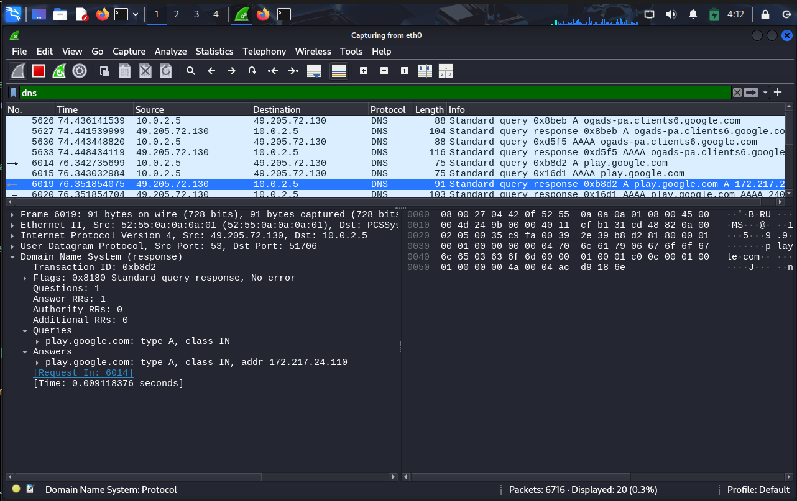
Observe:
- Response Code
- Returned IP Address
- Number of Answers
The DNS server responds with the IP address associated with the requested domain name.
Understanding the Process¶
When a user enters a website address into a browser:
- The browser requests the IP address associated with the domain.
- A DNS query is sent to a DNS server.
- The DNS server returns one or more IP addresses.
- The browser connects to the destination server using the returned IP address.
Without DNS, users would need to remember numerical IP addresses instead of human-friendly domain names.
Challenge Exercise¶
Using Wireshark, identify the IP addresses returned for:
- google.com
- amazon.com
- youtube.com
Record your observations.
SOC Analyst Perspective¶
DNS traffic can reveal:
- Websites visited by users
- Malware command-and-control communication
- Suspicious domains
- Data exfiltration attempts
For this reason, DNS monitoring is a critical part of many SOC environments.
Discussion Questions¶
Why is DNS necessary for Internet communication?
DNS allows users to access websites using easy-to-remember domain names instead of numerical IP addresses.
What would happen if DNS servers became unavailable?
Users would not be able to resolve domain names into IP addresses, making it difficult or impossible to access websites using their names.
Why do SOC analysts monitor DNS traffic?
DNS traffic often reveals user activity, malware communication, and connections to suspicious or malicious domains.
TCP Three-Way Handshake Analysis¶
Objective¶
Understand how TCP connections are established and identify the TCP Three-Way Handshake in Wireshark captures.
Many Internet services such as web browsing, email, and file transfers rely on TCP. Before data can be exchanged, TCP performs a handshake process to establish a reliable connection between two devices.
Generate TCP Traffic¶
- Ensure Wireshark is capturing traffic.
-
Open a browser and visit any website.
-
Apply the following display filter to Filter TCP Packets
tcp
You should observe numerous TCP packets.
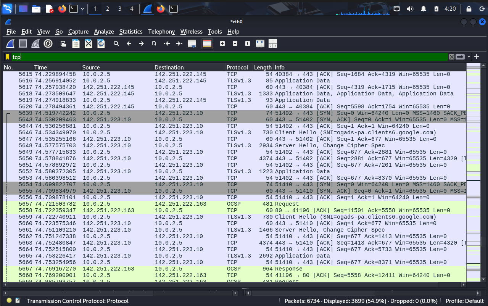
Identify the Three-Way Handshake¶
Locate the following sequence of packets:
Step 1: SYN The client initiates the connection by sending a SYN packet.
SYN
Step 2: SYN-ACK The server acknowledges the request and indicates that it is ready to communicate.
SYN ACK
Step 3: ACK The client acknowledges the server's response.
ACK
At this point, the TCP connection has been established and data transfer can begin.
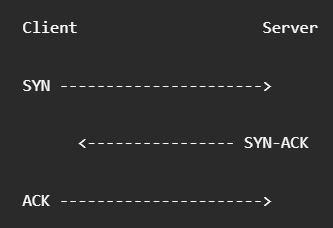
Understanding the Process¶
The TCP handshake ensures:
- Both devices are reachable
- Communication parameters are synchronized
- Reliable communication can occur
- Both endpoints are prepared to exchange data
Attacker Scenario¶
One common attack against TCP services is a SYN Flood attack.
In a SYN Flood:
- The attacker sends a large number of SYN packets.
- The attacker never completes the handshake.
- The server allocates resources for each half-open connection.
- Eventually the server becomes overwhelmed and legitimate users may be unable to connect.
This is a classic Denial-of-Service (DoS) attack.
Discussion Questions¶
Why is the TCP handshake important?
The handshake ensures that both devices are reachable and ready to communicate before data transfer begins.
What happens during a SYN Flood attack?
An attacker sends large numbers of SYN packets without completing the handshake, causing the server to waste resources on incomplete connections.
Why is TCP considered a reliable protocol?
TCP verifies delivery, retransmits lost packets, and establishes connections before exchanging data.
HTTP vs HTTPS Analysis¶
Objective¶
Compare unencrypted HTTP traffic with encrypted HTTPS traffic and understand how encryption protects sensitive information.
Many cyber attacks rely on intercepting network traffic. Understanding the difference between HTTP and HTTPS is fundamental for both defenders and attackers.
Analyze HTTP Traffic¶
- Open the following website:
http://neverssl.com
-
This website intentionally uses HTTP and does not redirect users to HTTPS.
-
Apply the following display filter:
http
-
Observe the Request
-
Select an HTTP packet and examine the packet details.
-
Observe:
-
URI
- Host Header
- User-Agent
- Request Method
You should be able to read most of the information directly because HTTP traffic is transmitted in plain text.
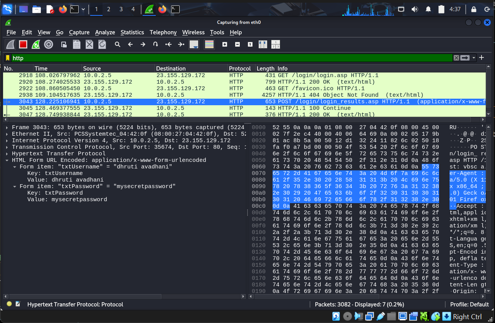
Analyze HTTPS Traffic¶
-
Open: https://google.com
-
Filter TLS Traffic Apply the following display filter:
tls
You should now observe TLS packets rather than readable HTTP requests.
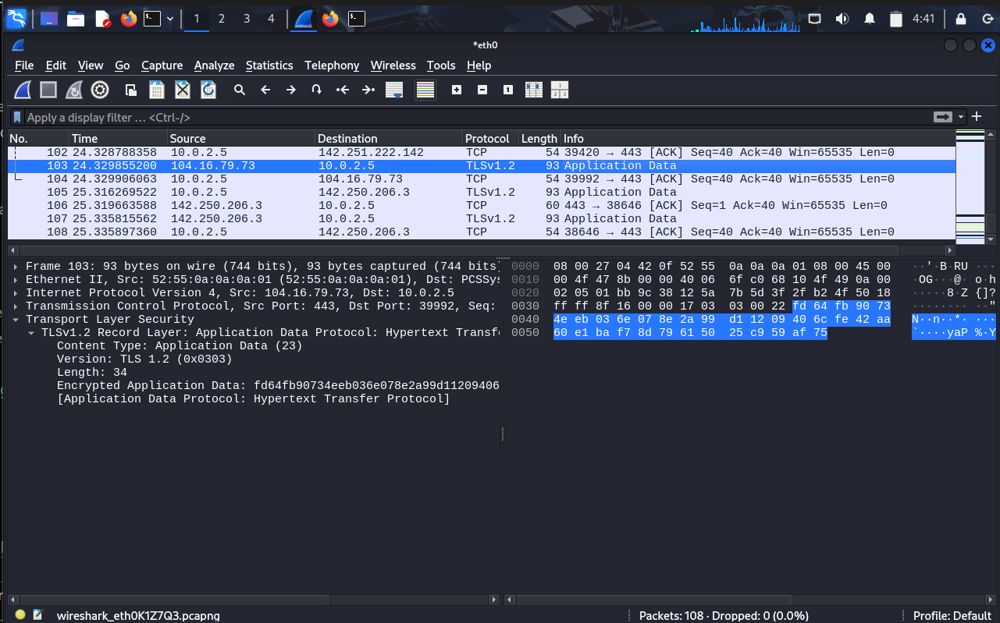
| Feature | HTTP | HTTPS |
|---|---|---|
| Data Transmission | Plain Text | Encrypted |
| Default Port | 80 | 443 |
| Packet Contents | Visible in Wireshark | Protected by Encryption |
| Security | No Encryption | TLS Encryption |
| Confidentiality | Low | High |
| Susceptible to Eavesdropping | Yes | No (without decryption) |
| Common Usage | Non-sensitive websites | Secure websites, banking, e-commerce, login portals |
Notice that the HTTP request contents are readable, while the HTTPS payload is encrypted and cannot be easily viewed.
Understanding TLS¶
TLS (Transport Layer Security) encrypts data exchanged between the client and server.
This helps protect:
- Usernames
- Passwords
- Session Cookies
- Personal Information
- Financial Data
SOC Analyst Perspective¶
When investigating network traffic, analysts can often view the full contents of HTTP communications. However, HTTPS traffic is encrypted, meaning analysts typically rely on metadata, certificates, logs, and endpoint telemetry during investigations.
Discussion Questions¶
Why is HTTPS considered more secure than HTTP?
HTTPS encrypts data using TLS, making it difficult for attackers to read or modify information while it is being transmitted.
Can an attacker still observe anything when HTTPS is used?
Yes. Although the contents are encrypted, attackers can still see metadata such as IP addresses, connection timings, and certain TLS-related information.
Why do modern browsers mark HTTP websites as insecure?
HTTP traffic is transmitted in plain text and can be intercepted or modified by attackers, making it unsuitable for transmitting sensitive information.
Learning Outcomes¶
Having completed this lab, you have:
- Captured live network packets using Wireshark and identified ICMP traffic generated by ping
- Analysed ARP traffic to understand how IP addresses are resolved to MAC addresses at Layer 2
- Investigated DNS queries and responses to trace how domain names are resolved
- Traced a TCP three-way handshake (SYN → SYN-ACK → ACK) to understand connection establishment
- Compared HTTP and HTTPS traffic in Wireshark to observe the impact of encryption
- Understood why HTTPS metadata remains visible to analysts even when payload is encrypted